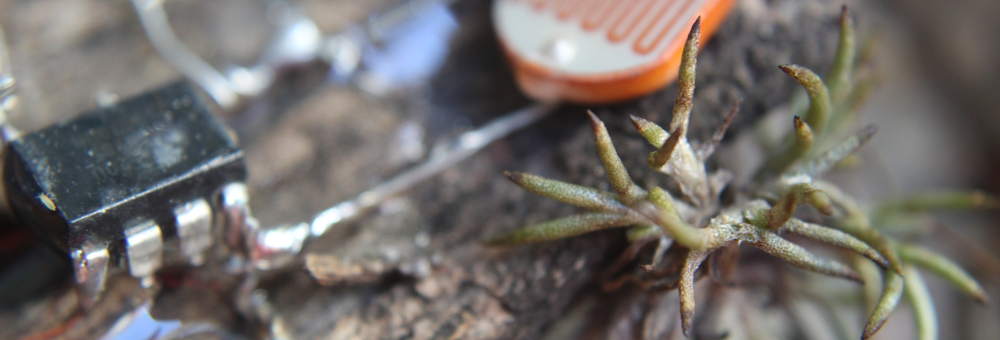

Simbioticxs: Taller experimental de electrónica y ecología cyborg
Sabado 2 de Octubre de 2021
Este espacio propone producir y reflexionar sobre las formas de integrarse y tensionarse entre lo vivo y lo electrónico/digital a partir de la creación sonora y visual en relación a un entorno natural. Durante el taller construiremos y programaremos pequeños organismos electrónicos, que habiten el terreno e interactúen en forma sonora/lumínica. Exploraremos y crearemos rítmicas sonoras y visuales, en dialogo con el entorno de mansa mansión. Reflexionaremos a partir de autores que trabajan sobre ecología, poshumanismo y arqueología de medios, interrogándonos sobre la relación entre técnica y naturaleza en el contexto actual.